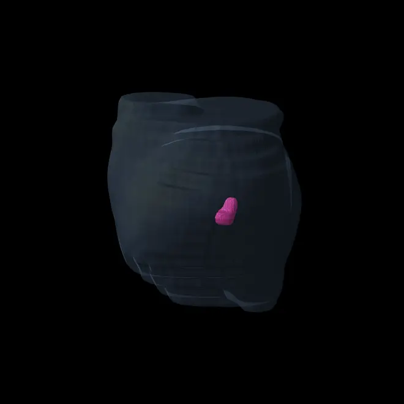
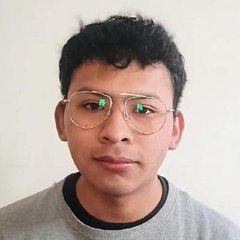

Imagen médica, hoy en resonancia de próstata
Delimita la próstata.Ubica lo sospechoso.
Contornos de la glándula, de sus zonas y de los focos candidatos sobre el estudio del propio servicio. El radiólogo revisa, corrige y decide.
MedVisual está pensado para distintos tipos de imagen médica. Por ahora lo hemos explorado sobre todo en próstata, que es lo que muestra esta página.

01 Revisión
Cuatro contornos sobre tu propio estudio.
El programa delimita la glándula completa, la zona periférica, la zona de transición y el foco sospechoso. Cada estructura va en su propia capa: se enciende, se apaga y se corrige a mano.
- Glándula completa
- Zona periférica
- Zona de transición
- Foco sospechoso
02 Multiparamétrico
Las secuencias sincronizadas.
T2W, ADC, alto-b y la vista sagital en una sola pantalla, con los cortes alineados. T2W y difusión son las secuencias centrales de PI-RADS v2.1[4]. Los contornos se calculan sobre T2W y se remuestrean a la malla de cada secuencia, y el programa lo deja escrito en pantalla.
03 Fusión
El mapa ADC sobre la anatomía.
La fusión superpone el coeficiente de difusión sobre la imagen T2W, con su escala en µm²/s y la indicación de concordancia con alto-b. Es la vista que hace visible lo que una secuencia sola no muestra.
04 Medición
Volúmenes y métricas, listos para exportar.
Volumen de la glándula y de cada zona, tamaño del foco y métricas de intensidad por corte. Todo se exporta a CSV o PDF, y las herramientas de distancia, ángulo y región de interés quedan a un clic.
05 Modelos
Los modelos corren en tu propio equipo.
Tres modelos nnU-Net[2]: glándula, zonas y detección de cáncer clínicamente significativo, cada uno con su requisito de secuencias. Las imágenes no salen del computador del servicio, y cada resultado queda marcado como no certificado.
Demo interactivo
Pruébalo ahora, sin instalar nada.
Elige un estudio, pulsa Analizar y recorre los cortes. Son salidas reales de nuestros modelos sobre estudios públicos, precalculadas para que corran en tu navegador.
1. Elige un estudio
Los tiempos grises son los medidos en el prototipo (notebook de 8 GB, sin GPU). La animación dura segundos porque el resultado ya está calculado.
2. Resultado
Los resultados de este demo ya estaban calculados con nuestros modelos nnU-Net[2] sobre estudios públicos de PI-CAI[3]. Esos mismos estudios se usaron para entrenar los modelos, así que el demo muestra cómo trabaja el programa, no qué tan bien funciona. No sirve para decisiones clínicas.
Evidencia y límites
Qué hemos medido y qué falta.
Cada cifra con las condiciones en que se midió.
- En un notebook de 8 GB sin tarjeta gráfica, el estudio completo tardó 33 min 29 s: 4 min 47 s la glándula, 4 min 58 s las zonas y 23 min 44 s la detección con sus tres pliegues.
- La prueba con equipos de otros fabricantes se hizo con un estudio por fabricante. En uno de ellos la segmentación de glándula falló y las zonas no se recuperaron.
Estado del proyecto
Un prototipo funcional, en desarrollo.
MedVisual está pensado para distintos tipos de imagen médica; hoy su desarrollo más profundo es en resonancia de próstata, sobre DeepProstate[1], una plataforma de código abierto desarrollada en la Universidad de Valparaíso. Funciona de extremo a extremo; falta probarlo en un centro real.
Hoy
Prototipo funcional
Modelos ejecutados de extremo a extremo sobre estudios públicos, con registro de cada corrida y exportación auditable.
Siguiente
Pruebas con centros
Evaluación con estudios propios de servicios de imagenología y medición del tiempo real de lectura.
Después
Validación clínica
Evaluación del desempeño en estudios independientes y cumplimiento de la normativa que corresponda a un software médico.
Contacto
¿Te interesa MedVisual?
Estamos en desarrollo y buscamos servicios de imagenología y urología interesados en conocerlo y en orientar qué debe medir.
